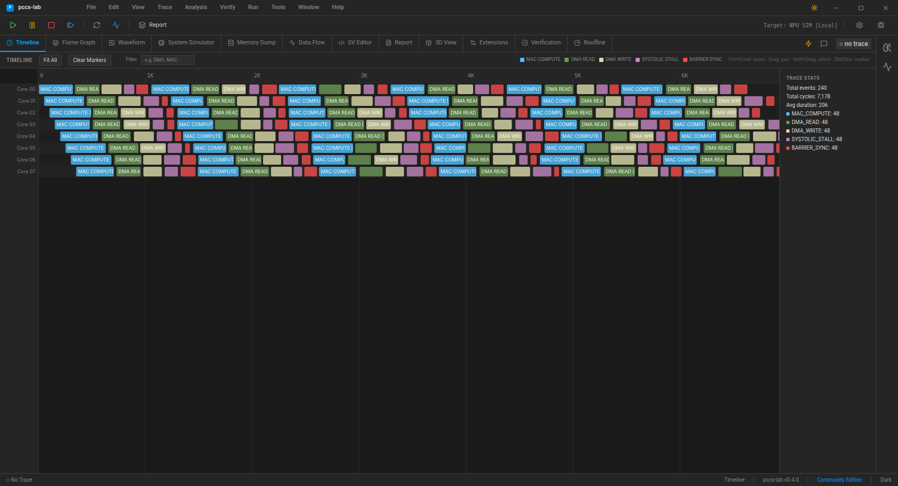
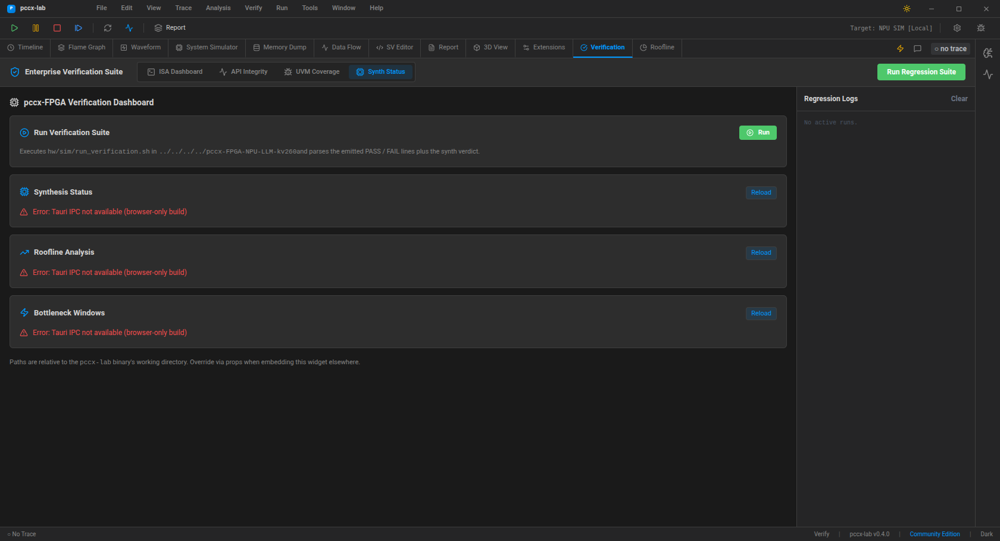

모듈 개요¶
pccx-lab 은 pccx NPU 아키텍처의 검증·프로파일링 Tauri 2 데스크톱
앱입니다. Phase 1 에서 원래 단일 덩어리였던 코어를 crates/ 하위의
9 개 집중형 Rust crate 와 최상위 React ui/ 트리로 분리했습니다.
각 crate 를 열거하는 대신 본 개요는 네 개의 개념 레이어로 묶어
보여줍니다 — 전체 목록은 design/rationale,
의존성 그래프는 design/phase1_crate_split
을 참고하십시오 (후자는 영어 전용).
레이어 |
crate |
역할 |
|---|---|---|
코어 |
|
|
파생 |
|
코어 표면을 소비하는 특화 생산자 (리포트, CI 게이트, ISA/API TOML 컴파일러, EAGLE 계열 프리미티브) |
IDE · 서비스 |
|
경험 표면과, 그 위에 꽂히는 네트워크 / 언어 서버 레인 |
브릿지 |
|
비-Rust 경계: DPI-C 로 오가는 SystemVerilog/UVM, LLM 호출 래퍼 |
의존성은 안쪽으로만 흐릅니다 — 모든 비-코어 crate 는 pccx-core
에 의존(전이적으로 아무것도 없음)하고, 어느 crate 도 pccx-ide 또는
pccx-remote 에 의존하지 않습니다 (둘 다 터미널 바이너리).
pccx-core 는 UI / 프레임워크 crate 를 import 해선 안 되며, ui/ 는
pccx-ide 와 Tauri IPC 브릿지로만 통신합니다.
쉘 한눈에¶
기본 레이아웃은 데스크톱 검증 쉘입니다. 상단 메뉴바, 툴바, 탭 스트립, 활성 작업 패널, 2개의 도킹 가능한 사이드 패널 (Live Telemetry + Workflow Assistant) 로 구성됩니다.
{kind=link}

위 캡처는 Timeline 탭입니다. 각 스윔 레인이 하나의 코어이고,
이벤트는 타입별 색상 코드 (MAC_COMPUTE / DMA_READ / DMA_WRITE /
SYSTOLIC_STALL / BARRIER_SYNC) 로 표시됩니다. 우측 통계 패널은
Rust 의 core_utilisation IPC 가 채웁니다.
주요 탭 (2026-04-20 기준)¶

탭 |
컴포넌트 |
단축키 |
용도 |
|---|---|---|---|
Timeline |
|
— |
사이클 축 스윔-레인 이벤트 타임라인 |
Flame Graph |
|
— |
계층적 stall / compute 스택 |
Waveform |
|
— |
시그널 웨이브폼 (향후 VCD sink) |
System Simulator |
|
— |
3D 시스톨릭 어레이 라이브 뷰 |
Memory Dump |
|
— |
flat trace buffer 의 페이지화된 hex 뷰 |
Data Flow |
|
Shift+A |
Blender 급 블록 다이어그램 캔버스 |
SV Editor |
|
— |
SystemVerilog 에디터 + 로컬 초안 도우미 |
Report |
|
— |
경계가 있는 리포트 컴포저 |
Verification |
|
— |
4-카드 pccx-FPGA 검증 대시보드 |
Roofline |
|
— |
ECharts 루프라인 차트 |
검증 대시보드 (pccx-FPGA 브릿지)¶
{kind=link}

Verification → Synth Status 서브탭은 pccx-FPGA RTL 검증을 위한 원스톱 대시보드입니다. 4개 카드가 위에서 아래로 쌓입니다:
Run Verification Suite — 인접한 pccx-FPGA 레포의
hw/sim/run_verification.sh를 shell 실행하고 테스트벤치별 verdict 테이블을 반환. 각 행의 Open 버튼은 생성된.pccx를trace-loaded이벤트로 Timeline 에 로드합니다.Synthesis Status —
hw/build/reports/{utilization,timing_summary}_post_synth.rpt를 파싱, LUT / FF / RAMB / URAM / DSP 카운트와 WNS 타이밍 verdict 를 보여줍니다.Roofline Analysis — 현재 캐시된 트레이스의 arithmetic intensity, achieved GOPS, compute-vs-memory-bound verdict 를 계산합니다.
Bottleneck Windows — 고정 윈도우 기반 DMA / stall hotspot 목록, share %, 이벤트 수, 코어 커버리지 (정규화) 포함.
End-to-end 흐름은 검증 워크플로우 참고.
Tauri IPC 표면 (17 커맨드)¶
커맨드 |
용도 |
|---|---|
|
트레이스 캐시 + |
|
Timeline 용 flat 24-B/event 버퍼 |
|
코어별 MAC-이용률 통계 |
|
LLM-프롬프트 사이즈 트레이스 요약 |
|
SV UVM 시퀀스 stub |
|
5개 내장 전략 열거 |
|
레거시 엔터프라이즈 리포트 |
|
트레이스 + synth 의 Markdown 요약 |
|
Arithmetic intensity + bound verdict |
|
Hotspot 윈도우 목록 |
|
파싱된 Vivado synth 리포트 |
|
전체 pccx-FPGA 스위트 실행 |
|
|
|
Tier + licensee + 만료 |
|
컴파일-인 tier |
|
플러그인 카탈로그 (로컬 LLM, VCD exporter, …) |
Native-window 자동화¶
위의 모든 것은 진짜 webkit2gtk 웹뷰 안에서 tauri-driver 로
구동되며 — CI 가 쓰는 동일한 E2E 하네스입니다.
검증 워크플로우 페이지가 selenium + tauri-driver
셋업을 설명하며, 현재 19개 pytest 케이스가 IPC 표면 전체를
end-to-end 로 검증합니다.